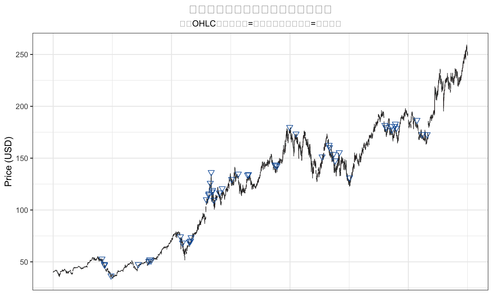

蜡烛图与动态套期保值
问题现场
套期保值的目标是减少风险，不是让每次对冲单独赚钱。若看跌形态触发减仓后市场继续上涨，对冲会产生机会成本，但这不一定表示风险规则失败。评价必须比较组合波动、回撤、尾部损失和成本，而不仅是信号方向胜率。
学习目标
- 区分方向投机与风险对冲；
- 将看跌蜡烛候选映射为目标风险暴露；
- 计算简单的Beta或名义套保比率；
- 评价对冲的回撤、成本和机会成本；
- 识别频繁开关对冲造成的换手风险。
经典形态与市场机制
套期保值通过建立与原风险暴露相反的头寸降低净敏感度。股票组合可用股指期货、ETF或期权对冲；商品经营风险可用相关期货。蜡烛信号只能作为动态调整的一项输入，基础套保比率仍来自暴露、合约乘数、Beta、久期或商品数量。
本章把高风险状态定义为60日回撤低于-8%或20日年化波动率高于75%分位；只有此时出现流星或看跌吞没才触发-1风险警报。它表达“减小多头暴露”，不是建立无限做空。
可计算定义
若组合市值为 \(V_t\)、相对对冲工具Beta为 \(\beta_t\)、期货价格为 \(F_t\)、乘数为 \(M\)，完全Beta对冲张数近似：
\[ N_t=-\frac{\beta_tV_t}{F_tM}. \]
本章的动态覆盖率设为 \(h_t=0.5I(s_t=-1)\)，即警报时只覆盖50%风险。目标期货张数为 \(h_tN_t\)。真实执行需要取整、保证金、基差和涨跌停约束。
研究设计
冻结数据没有股指期货，因此主实验只检验风险状态中的看跌信号对AAPL后续下跌是否有识别力。完整套保评价留待加入对冲工具数据。稳健性一：覆盖率25%、50%、75%；稳健性二：警报至少持续2日才调整；稳健性三：设置5日冷却期，控制换手。基准包括不对冲和恒定50%对冲。
R实现
features <- lab_features()
bearish <- lab_merge_signals(
lab_base_signals()$shooting,
lab_base_signals()$engulfing
)
risk_state <- features$drawdown_60 < -0.08 |
features$rv_20 > stats::quantile(features$rv_20, 0.75, na.rm = TRUE)
signal_r <- ifelse(risk_state & bearish < 0, -1, 0)
hedge_fraction <- ifelse(signal_r < 0, 0.5, 0)
# 加入对冲工具后，用 ebacktest 明确执行价与成本：
config <- ebacktest::default_backtest_config() |>
ebacktest::set_exec_price_col("open") |>
ebacktest::set_transaction_costs(
fee_rate = 0.0003, stamp_tax = 0, slippage_rate = 0.0005
)套保信号应先转换为目标权重，再交给回测引擎。不能把方向列直接当合约张数。
Python实现
from python.candlestick_lab import load_data, pattern_signal
import numpy as np
from ebacktestcraft import Config, run
panel = load_data()
returns = panel["close"].pct_change()
rv_20 = returns.rolling(20).std() * np.sqrt(252)
high_60 = panel["close"].rolling(60).max()
drawdown = panel["close"] / high_60 - 1
bearish = np.sign(
pattern_signal("shooting").to_numpy()
+ pattern_signal("engulfing").to_numpy()
)
risk_state = (drawdown < -0.08) | (rv_20 > rv_20.quantile(0.75))
panel["weight"] = np.where(risk_state & (bearish < 0), 0.5, 1.0)
config = Config(exec_price_col="open", fee_rate=0.0003, slippage_rate=0.0005)
# result = run(panel_with_hedge_instrument, config=config)示例中的单标的权重只展示减仓逻辑。没有对冲工具价格时，不执行伪“期货套保回测”。
图形诊断

检查信号是发生在风险暴露扩大之前还是之后。若警报总在大跌完成后出现，对冲只会锁定损失并承担反弹机会成本。
证据与稳健性
| sample | events | mean_gross | mean_net | win_rate | ci_low | ci_high |
|---|---|---|---|---|---|---|
| 全部事件 | 94 | -0.0022 | -0.0032 | 0.4681 | -0.0123 | 0.0060 |
| 非重叠事件 | 73 | -0.0012 | -0.0022 | 0.4932 | -0.0125 | 0.0081 |

最终对冲评价应比较年化波动、最大回撤、Expected Shortfall、成本和上涨捕获率。方向平均收益只是触发器诊断。若动态方案不如恒定低成本对冲，应优先选择更简单方案。
AI协作实验室
AI生成风险暴露清单、合约单位测试和对冲前后归因表。约束是AI不能把机会成本判定为策略错误，也不能忽略保证金。验收包括名义金额守恒、方向符号、合约取整、基差冲击和极端跳空压力测试。
失效条件与常见误区
- 用对冲腿是否赚钱评价对冲；
- 把信号方向直接当合约数量；
- 忽略Beta、基差、乘数和保证金；
- 频繁开关对冲却不计换手；
- 只与不对冲比较，不与恒定对冲比较。
本章小结与练习
动态套保是风险预算问题。蜡烛信号只能影响覆盖率，不能替代暴露测量和对冲工具数据。
- 给定组合市值、Beta、期货价格和乘数，计算25%、50%、75%覆盖张数。
- 比较即时触发与连续2日确认的换手差异。
- 设计动态、恒定和不对冲三种方案的完整评价表。
进入下一章前，请确认你能区分触发器检验与完整套保绩效，并能解释机会成本为何不是唯一失败标准。